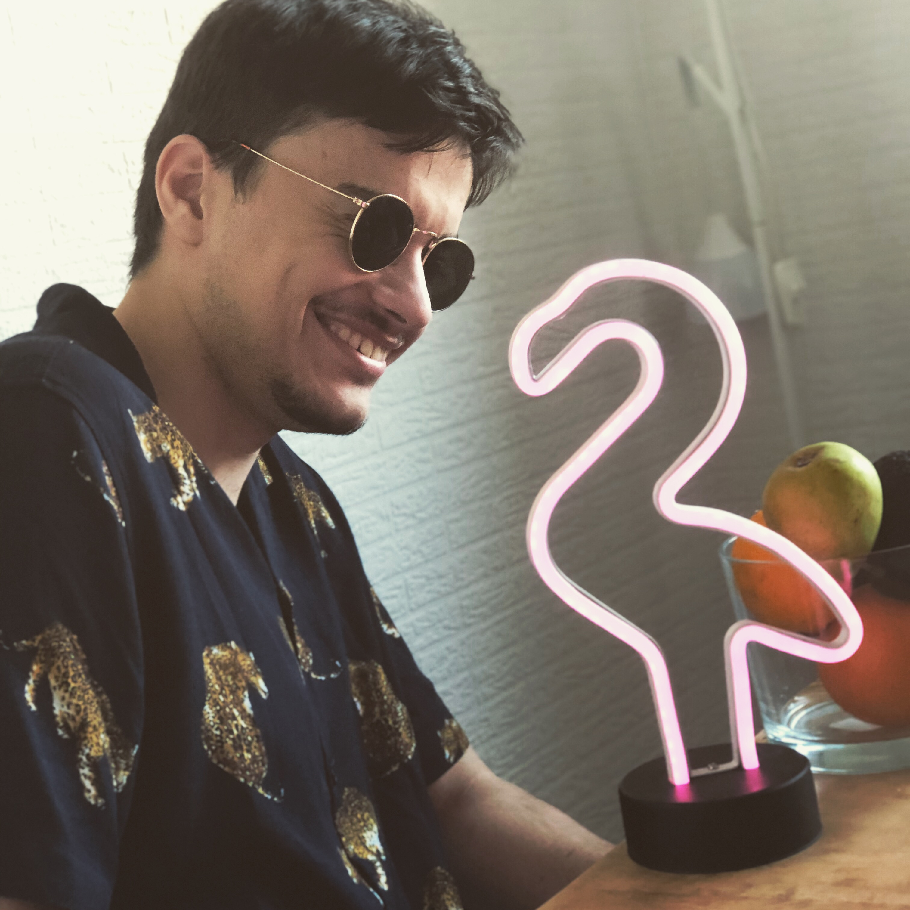

My report page in the course Software Development for the Web

My name is Edmir Suljic, born i Örebro in 1996. I moved to Malmö in 1999 and have been there ever since. I graduated from Malmö Borgarskola in 2015 and took a break for 2 years where I worked a bit.
I have always been interested in computers (like everyone else in here I suppose), but did not even consider studying programming until late 2016 when my friend who is a programmer suggested it.
My hobbies mostly include music. I play guitar, have been for 7 years. I suppose it would be my main passion but unfortunately it does not always pay the bills so programming it is.
I do like to try new things all the time, but sticking to it might be the biggest challenge. Maybe it's a generational thing.